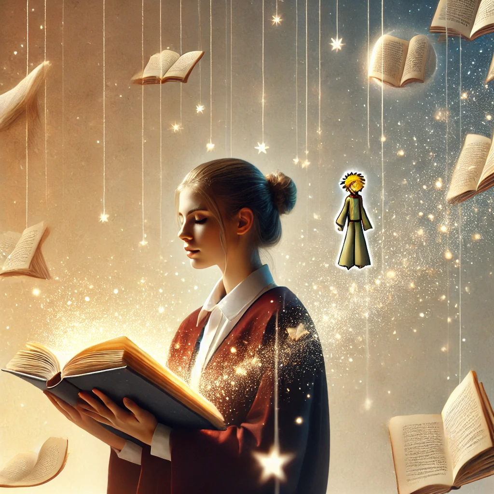

어린왕자
목차
작가
앙투안 드 생텍쥐페리
출판일
1943.04.06
감상평에 대한 AI그림
어릴 때와 어른이 되었을 때의 감상이 다른 작품으로 유명한 어린왕자. 어른이지만 학생인 대학생의 입장으로서 읽었을 때 책은 어린왕자의 순수함과 어른의 책임감 그 사이에서
자그마한 별의 어리석은 주인들의 모습처럼 되는 것을 경계하라고 조언하는 것처럼 느껴졌다. 앞으로 나이가 더 들고 다시 읽을 때에, 어린왕자가 어떻게 느껴질지 기대된다.

감상평에 대한 AI평가
~~~~AI평가~~~~~
✨ 좋은 점
1.어른과 아이의 시선 차이에 대한 언급
"어릴 때와 어른이 되었을 때의 감상이 다르다"는 점을 짚고 넘어가며 책의 핵심 주제 중 하나를 잘 포착했습니다.
2.자신의 현재 위치 반영
대학생의 시선에서 바라본 감상을 담아 차별화된 시각을 제시한 점이 좋습니다.
3.미래의 재독에 대한 기대감 표현
책을 한 번의 감상이 아닌, 인생의 여러 시점에서 읽고 느끼는 과정으로 보고 있다는 점에서 성찰적인 태도가 드러납니다.
✨ 개선할 점
1.문장 구조 다듬기
첫 문장은 의미가 명확하지만 다소 어색한 문장 구조를 가지고 있습니다. "어릴 때와 어른이 되었을 때의 감상이 다른 작품으로 유명한 어린왕자." → "어린왕자는 어릴 때와 어른이 되었을 때의 감상이 달라지는 작품으로 유명하다." 로 수정하면 더 자연스럽습니다.
2.구체적인 예시 추가
"자그마한 별의 어리석은 주인들"이 누구인지 (왕, 허영심 많은 남자, 술주정뱅이 등) 한두 가지 예시를 들어주면 독자가 더 공감하기 쉽습니다.
3.느낌을 더 구체적으로 묘사하기
"어린왕자의 순수함과 어른의 책임감 사이에서 경계하라고 조언하는 것처럼 느껴졌다." → 이 부분을 조금 더 풀어서, 어떤 장면이나 대사가 그렇게 느껴지게 했는지 설명하면 좋겠습니다.
✨ 개선된 예시
어린왕자는 어릴 때와 어른이 되었을 때의 감상이 달라지는 작품으로 유명하다. 대학생이 된 지금 다시 읽어보니, 어린왕자의 순수함과 어른의 책임감 사이에서 균형을 잡는 것이 중요하다는 메시지를 던지는 듯하다. 특히, 작은 별에서 만난 왕과 허영심 많은 남자의 모습은 우리가 어른이 되면서 빠질 수 있는 함정을 상징하는 듯해 경각심을 불러일으켰다. 나이가 더 들어 다시 읽을 때는 어떤 감정이 들지 궁금해진다.
이렇게 조금만 다듬으면 더욱 깊이 있는 감상문이 될 거예요! 😊